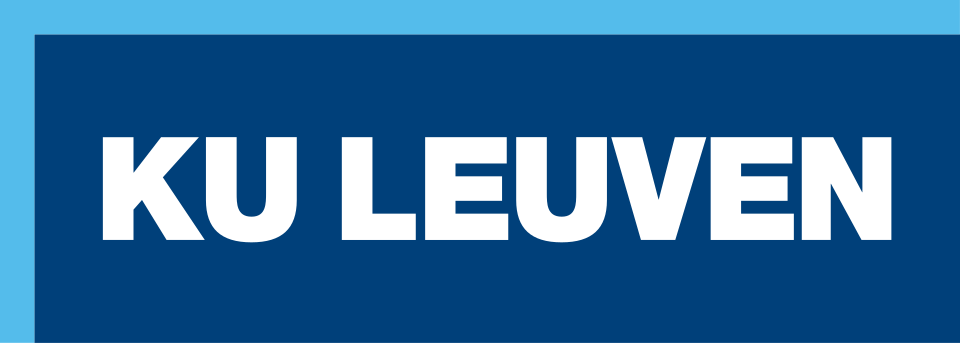

Beeld volgt · Bodem
01
Bodem
Onderzoek en begeleiding van bodemsaneringen op verontreinigde terreinen, met oog voor praktijk en regelgeving in België.
Zaakvoerder van Consulterra BV. Bodem- en grondwatersanering in België, al meer dan 25 jaar.

Over
Luc begon als projectingenieur in saneringen en groeide door tot projectleider en coördinator. In april 2012 richtte hij Consulterra BV op, van waaruit hij advies en projectbegeleiding biedt rond verontreinigde terreinen. Van 2015 tot 2017 was hij projectmanager bij DC Industrial NV (Group De Cloedt).
Expertise
Verontreinigde terreinen, grondwater en de coördinatie van saneringsprojecten. Duidelijke dossiers, van eerste inschatting tot uitvoering.
Onderzoek en begeleiding van bodemsaneringen op verontreinigde terreinen, met oog voor praktijk en regelgeving in België.
Grondwatersanering binnen Belgische projecten: van diagnose tot opvolging tijdens de werken.
Planning, uitvoering en overleg met aannemers, overheden en opdrachtgevers. Het overzicht bewaren tot het dossier af is.
Projecten
Referenties komen hier. Zodra er cases met foto en korte toelichting klaarstaan, plaats ik ze op deze plek.
Case 01
Hier komt een korte beschrijving: wat speelde er, wat was de aanpak, en wat was het resultaat.
Bodem · locatie en jaar volgen
Grondwater · locatie en jaar volgen
Veeg voor meer
Loopbaan
Van projectingenieur tot zaakvoerder. Belgische milieubedrijven, daarna Consulterra BV in Heusden-Zolder.
Eigen adviesbureau sinds april 2012. Garenstraat 65, 3550 Heusden-Zolder.
Projectmanager bij DC Industrial NV, Group De Cloedt.
Coördinatie van saneringsprojecten, mei 2007 tot april 2012.
Projectleiding van saneringen, juni 2003 tot mei 2007.
Eerste jaren als projectingenieur saneringen, 1999 tot 2003.
Opleiding
Industriële microbiologie aan de KU Leuven. De wetenschappelijke start van een loopbaan in bodem en milieu.

KU Leuven
Katholieke Universiteit Leuven
Contact
Heb je een vraag over een saneringstraject, of wil je samenwerken via Consulterra? Stuur gerust een bericht via LinkedIn. E-mail en telefoon volgen hier zodra die publiek mogen.